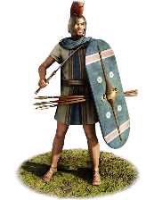
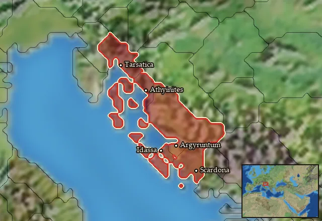

RTR: Imperium Surrectum
RTR: Imperium SurrectumLiburnian Marines


Class: light · Category: infantry · Men per unit: 40
Description
The Liburnians make their living from the sea. Their Marines are therefore elite warriors, well versed in seamanship, trading, raiding, and warring. These men know that when fighting at sea, the water is a greater enemy than any warrior, so eschew body armour, only wearing a tunic, cloak, and a bronze Illyrian helmet as a concession to the need for personal protection. It is better to be agile than drown! They are armed with javelins as well as a Pritoka-Bela Cerkev type curved hacking blade with a pointed tip, the perfect weapon for confused battles onboard a ship. They also use an oval shaped thureos shield, with smooth edges to avoid tangling in sails, ropes, and many other dangerous and entangling hazards.
Historical background
“The Liburni, another Illyrian tribe, were next to the Ardiæi as a nautical people. These committed piracy in the Adriatic Sea and islands with their light, fast-sailing pinnaces, from which circumstance the Romans to this day call their own light, swift biremes liburnicas.”
– Appian (Ill. 1.3)
The Liburnians were one of the foremost Illyrian naval powers. One of the main ways in which this power was manifested was through piracy. The Greeks considered piracy to be a barbarous habit, especially when done by greedy individuals or states who were themselves regarded as uncivilised, although naturally it was more forgivable to these writers if the Greeks themselves were the ones doing it (Sasel Kos, Peoples on the northern fringes of the Greek world Illyria as seen by Strabo (2008), p. 624).
One important thing to bear in mind is that at the time, most navies were not professional, and ships and their crews were essentially private entities that would sometimes be incorporated into their liege’s military. Piracy itself could actually be an indication of a fairly sophisticated society, as the logistics required are quite significant. It would require a harbour or base, some sort of local leader or command structure, investment in time and materials for shipbuilding, which could be pretty costly even for a simple ship. Even the process of finding enough supplies for a crew to sail for a certain amount of time would imply that there was a degree of local co-operation, perhaps even higher authorities being involved, in order to fulfil these basic logistical requirements. Therefore, when Queen Teuta of the Ardiaei stated “so far as concerned private activities it was not customary for Illyrian rulers to preclude their subjects from augmenting their fortunes at sea” (Polybius 11.8.8), it helps to highlight that it was not simply a case of a ruler being able to tell their pirates to stop, as that could wither the logistical base that made such naval excursions possible in the first place (Davies, Cultural, Social And Economic Features Of The Hellenistic World (2006), pp. 286-7). Piracy itself could be an economic stimulator, or leverage against another state. Being a fast way of accumulating wealth, it is likely that local elites were heavily involved in the entire process, rather than the outcasts and bandits we might imagine (Borsic, Dzino and Radic Rossi, Liburnians and Illyrian Lemb (2021), p. 23). One man’s pirate is another state’s sailor.
Creating ships such as the Liburnian/Illyrian lemboi also shows that these private actors were capable of technological developments along lines different to those of major state actors like the Romans or Greeks, who would use massive multi-level galleys, assuming that more layers of oars would result in a better ship. Pirates could be a powerful tool to bring to bear on an enemy, as they had experience and the know-how from regular sailing and fighting. Not to mention, their use as mercenaries could decrease their predation upon friendly shipping, or simply deprive an enemy of a useful asset (Davies (2006), p. 286). Lemboi were indeed smaller ships than most contemporary war galleys, but could be used effectively against them, such as in the Battle of Paxos (229 BC), which Polybius (2.10) describes in some detail: “The Illyrians lashed their boats together in batches of four and thus engaged the enemy. They sacrificed their own boats, presenting them broadside to their adversaries in a position favouring their charge, but when the enemy’s ships had charged and struck them and getting fixed in them, found themselves in difficulties, as in each case the four boats lashed together were hanging on to their beaks, the marines leapt on to the decks of the Achaean ships and overmastered them by their numbers. In this way they captured four quadriremes and sunk with all hands a quinquereme”.
The lemboi themselves had an unusual construction technique, as they were “as a rule fastened their ships together with thongs” (Festus, Epitoma, s.v. serilia, 508.33), a distinctive technique that could make the most of local resources and techniques whilst allowing for more flexible hull structures more suited to the Northern Adriatic rather than to the more turbulent waters of the south (Borsic et al (2021), pp. 57-8). Liburnian and Illyrian shipbuilding capabilities were extensive enough that Philip V of Macedon used them, "as he thought the Illyrian shipwrights were the best, he decided to build a hundred galleys" (Polyb. 5.109.3). The lemboi was commonly associated with the Liburnians, as (Pseudo)Lucian (LCL 432) describes a journey on “a swift ship [which] had been made ready for me. It was one of the double-banked vessels which seem particularly to be used by the Liburnians, a race who live along the Ionian Gulf”. The effectiveness of the Liburni/lemb can best be shown by the Romans, who were struck with the utility and practicality of the design, taking it for themselves “Different provinces at various times held considerable naval power and therefore the types of ships were diverse. But when Augustus was fighting at the battle of Actium and Antony was beaten mainly by the auxiliaries provided by the Liburni, it became clear from the experience of that great encounter that the ships of the Liburni were better-designed than the rest. Therefore, usurping the likeness and the name, the Emperors built the fleet according to their pattern. Liburnia is a part of Dalmatia lying next to the city of Iadera; ships of war are built today on their model and are called liburnae” (Vegetius: De re militari B-19.3).
As we have seen in previous paragraphs, the Illyrian, possibly Liburnian Marines were definitively identified by Polybius (2.10), so the next thing to examine is what these Marines likely would have used as weapons. The equipment of the Liburnian Marines must be effective but also convenient to use in the confines of a ship or boarding action. As such, they wear no body armour as that would likely be the death of them if they were to fall in the water, luckily as Illyrians tended to just wear tunics and cloaks anyway, this is not a major sacrifice for the Liburnian Marines. That is not to say they are completely without armour, they wear the prolific bronze Illyrian helmet, in this case based on a find from the Cape of Jablanac on the island of Cres. These particular helmets were used between ca. 550 and 400 BC as a defensive weapon, but the Illyrian helmet in general was important status-symbol in the wider Balkan peninsula and saw usage for a much longer period of time thereafter (Borsic et al. (2021), p. 22). The Prozor belt piece has an engraving showing warriors on lemboi boats wearing what seem to be Illyrian style helmets, so gives further evidence that Marines could at least have head protection (Borsic et al. (2021), pp. 46-48). The other iconic Illyrian war gear featured here is a set of javelins, again something that most Illyrian units use in combat.
The more unique features for this unit are their shield and the sword, as they both represent more uncommon equipment. The shield is a long rectangular shape but with curves at the top and bottom of the shield, something similar to but not the same as the standard Celtic thureos shield, instead it is a derivation, possibly of the Liburnian’s own design or their close neighbours, the Veneti. These are inspired from the Arnoaldi situla and a Venetic decorative plate, which show the thureos but with a wider shape and rounder ends (Zaghetto, Il Santuario preromano e romano di Piazetta S.Giacomo a Vicenza [2003]). Perhaps the most distinctive item on this unit is their sword, a forward curving sickle knife known as the Pritoka-Bela Cerkev type from a finding in Sisak, Croatia (Drnic, Segestan Warriors (2018), p. 76). These special, hacking knives are commonly found in the western Balkans, the northern part of the eastern Adriatic coast, and the southeastern Alpine region, all of which are areas the Liburnians operated or lived in (Drnic (2018), p. 64). Pritoka-Bela Cerkev knives could be confused with a Thracian/Dacian sica, but they come in a variety of sizes, and their angles are sometimes smoother and more curved rather than straight. It could also possibly have been designed by the Illyrians or Liburnians independently of Thracian influence, as sica type knives and other derivatives have not been recorded west of the Croatian-Serbian Danube region valley. Moreover, Pritoka-Bela Cerkev knives are larger, between 35-55cm, and therefore are better at creating huge cutting wounds, with the further utility of having a pointed head that could stab, if necessary (Drnic (2018), pp. 75-77). All of this would be very useful in naval combat for hacking through ropes or enemy soldiers, not to mention being able to be used as an improvised shank should combat get particularly cramped and take place at close quarters.
Stats
| Rank in roster | Rank in roster | Rank in roster | Rank in roster | ||||||||
|---|---|---|---|---|---|---|---|---|---|---|---|
| Men per unit | 40 | ███······· 31% | Attack | 11 | ████······ 44% | Charge bonus | 14 | ██████···· 59% | Defence | 32 | █████····· 51% |
| · armour | 3 | ██········ 22% | · defence skill | 25 | ███████··· 74% | · shield | 4 | █████····· 49% | Morale | 12 | ██████···· 58% |
| Discipline | Normal | Training | Untrained | Recruitment cost | 1,787 dn | ████······ 35% | Upkeep per turn | 654 dn | █████····· 53% | ||
| Turns to recruit | 3 |
Weapons
| Primary | Secondary | Primary | Secondary | Primary | Secondary | Primary | Secondary | ||||
|---|---|---|---|---|---|---|---|---|---|---|---|
| Attack | 11 | 9 | Charge bonus | 14 | 15 | Type | thrown · blade | melee · blade | Damage | piercing | slashing |
| Projectile | javelin | — | Range | 60 | — | Ammunition | 5 | — | Properties | Thrown | Armour-piercing (counts only half the target's armour) |
Defence
| Primary | Secondary | Primary | Secondary | Primary | Secondary | Primary | Secondary | ||||
|---|---|---|---|---|---|---|---|---|---|---|---|
| Total | 32 | — | Armour | 3 | — | Defence skill | 25 | — | Shield | 4 | — |
Condition and terrain
| Hit points | 1 | Ground: scrub / sand / forest / snow | 0 / 0 / 0 / 0 | Charge distance | 30 | Formations | Square |
Technical stats
| Time between blows (primary / secondary) | 2.5 s / 2.5 s | Extra fatigue in hot climates | 0 | Collision mass per man (1.0 is normal) | 0.91 | Spacing between men: close / loose | 1 × 1.2 m / 2 × 2.4 m |
| Default ranks | 5 |
In battle: Can hide in long grass · Can sap · Very good stamina
Who can recruit it
A core roster unit for one faction, which can raise it anywhere it holds the right building:
Any faction holding one of the provinces below can field it.
Exactly what a settlement must have, route by route (5)
| Building | Also requires | Building | Also requires | Building | Also requires | Building | Also requires |
|---|---|---|---|---|---|---|---|
| Any settlement | Garrison Building or Tier 1 Military Industrial Complex · Liburnian area of recruitment · Any Government (Dependency, Indirect Rule or Direct Rule) · Tier 2 Colony not built · Trade Port | Indirect Rule | Garrison Building or Tier 1 Military Industrial Complex · Tier 1 Colony · Trade Port | Direct Rule | Garrison Building or Tier 1 Military Industrial Complex · Tier 1 Colony · Trade Port | Homeland | Garrison Building or Tier 1 Military Industrial Complex · Trade Port |
| Any settlement | Garrison Building or Tier 1 Military Industrial Complex · Liburnian area of recruitment · Dependency or Indirect Rule · Tier 1 Colony not built |
Areas of recruitment

| Zone | Provinces | ||||||
|---|---|---|---|---|---|---|---|
| Liburnian | 5 |